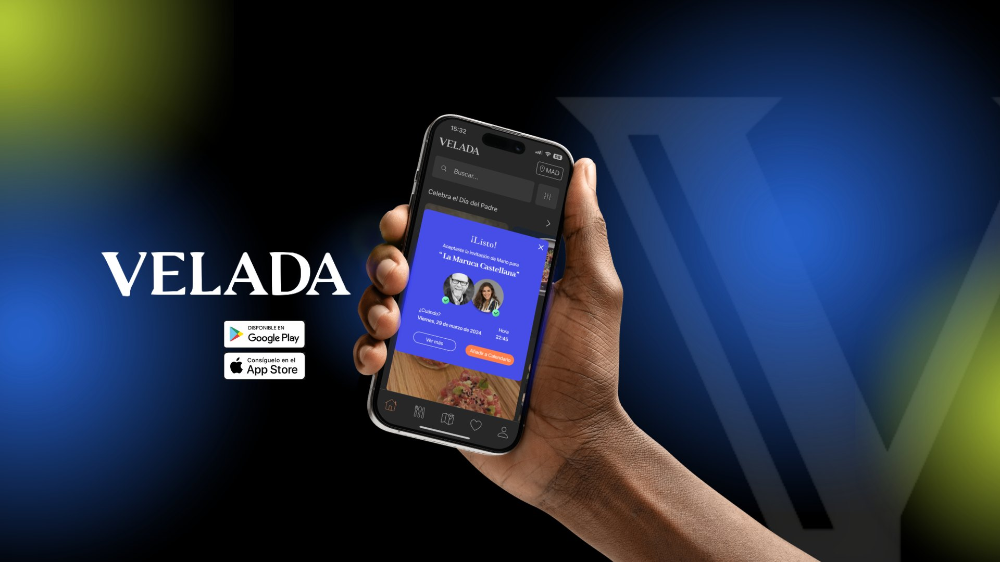

Planificar
Entender cómo se prepara y se ejecuta un Design Sprint de forma adecuada.
Innovación · Design Sprint · Marzo 2024
Un Design Sprint de 2h30 para entender y mejorar el onboarding de Velada, una app de reservas de restaurantes: desde la planificación de la sesión hasta prototipos testeados con usuarios reales.

01El reto
Velada es una app para descubrir restaurantes y reservar veladas en grupo. El reto de la asignatura de Innovación era preparar y ejecutar un Design Sprint real: entender el onboarding actual de la app, identificar sus problemas y proponer mejoras.
El proyecto tenía dos capas: el resultado de diseño para Velada y, sobre todo, aprender a diseñar y facilitar la propia sesión, eligiendo herramientas, tiempos y materiales para un grupo de participantes.
Entender cómo se prepara y se ejecuta un Design Sprint de forma adecuada.
Definir las dinámicas y plantillas que ayudan a generar propuestas en poco tiempo.
Comprender cómo encajan las fases para que el proceso fluya con lógica.
02Planificación
Todo empezó con una investigación sobre la metodología para entender cada fase y sus actividades. Después usamos el Workshop Design Canvas para fijar el objetivo, el alcance, los inputs necesarios y los materiales que había que preparar antes de la sesión.
Dividimos el proyecto en tres momentos: preparación (objetivos, entregables y planificación), sprint (ejecutar y obtener información) y post sprint (procesar los resultados del taller).
03Escaleta
Con una escaleta minuto a minuto organizamos la sesión en cuatro fases. Por el límite de 2h30, el testeo se sacó del sprint y se hizo después, con usuarios externos.
Contexto de la app, muestra del onboarding, User Persona, Customer Journey y How Might We.
Lightning Demos para inspirarse y generación individual de ideas con la técnica 6-3-5.
Museo de Arte, Mapa de Calor y Crítica Rápida para elegir una idea.
Blueprint del servicio y wireframes en plantillas preparadas de antemano.
Los participantes eran compañeros del máster en experiencia de usuario de UDIT, con formación en diseño. Por eso preparamos plantillas para el User Persona, el Journey, el 6-3-5 y los wireframes: así ganaban tiempo para pensar en lugar de dibujar estructuras.
04Comprender
Tras presentar la app y su onboarding, el equipo creó un User Persona para tener una visión común de quién usa Velada, y un Customer Journey del proceso actual para localizar los pain points. Los problemas se reformularon como oportunidades con How Might We.
05Diverger
Abrimos la ideación con Lightning Demos: ejemplos de onboarding de otras apps. Los participantes añadieron referentes que no habíamos previsto, y cada uno capturó las mejores ideas en un dibujo rápido.
Después, la técnica 6-3-5: cada persona dibuja ideas y las pasa al compañero, que las desarrolla. La elegimos porque con cuatro participantes genera hasta 48 ideas en 20 minutos, asegura que todos participen y construye las ideas en grupo.
06Converger
Para converger usamos tres dinámicas: un Museo de Arte para ver todas las propuestas, un Mapa de Calor con puntos adhesivos para votar de forma discreta y una Crítica Rápida para discutir fortalezas y debilidades antes de elegir.
Aquí apareció el mayor aprendizaje del sprint. La decisión se tomó con muy poco tiempo y el grupo eligió un programa de puntos por reservas: una buena idea de negocio, pero que no respondía al objetivo, que era el onboarding.
“Es desde este punto que el proceso se ve afectado y donde la guía del facilitador tendría que ser vital para no perder el rumbo.”
Informe final del Design Sprint — Grupo 6
07Prototipar
Para prototipar elegimos un blueprint que diera una visión estructurada de la propuesta y después wireframes sobre plantillas de móvil preparadas de antemano. Por la falta de tiempo, la fase se redujo de 45 a 20 minutos.
08La sesión en vivo
Al empezar, el tiempo disponible bajó a 2 horas, así que reajustamos la escaleta sobre la marcha. Organizamos todo el sprint en una pizarra para que el grupo viera en todo momento dónde estaba y lo que ya había hecho; trabajar de pie también mantuvo la energía.
La introducción fue más rápida de lo previsto, pero Comprender se alargó aunque recortamos el Journey.
En el How Might We y en los Lightning Demos el grupo dudó del objetivo y de qué es un onboarding. Lo definimos juntos antes de seguir.
Adelantamos el descanso antes de decidir porque los participantes lo necesitaban.
“Fue intensa. Productiva, pero con tantas actividades en tan poco tiempo es fácil perder el enfoque.”
Feedback de los participantes al cierre de la sesión
09Post sprint
Al revisar los resultados como equipo, vimos que la idea elegida se había alejado del onboarding. En lugar de forzarla, volvimos a las ideas del 6-3-5 y rescatamos las que sí respondían al objetivo. Las convertimos en cuatro propuestas prototipadas en alta fidelidad sobre la estética de Velada.
10Testeo
Testeamos las propuestas en 4 entrevistas con un guion común: ¿es necesaria para empezar a usar la app?, ¿aporta valor?, ¿es útil y fácil de usar?, ¿qué te resulta más interesante? Los participantes navegaron el prototipo mientras una persona tomaba notas.
11Aprendizajes
El sprint funcionó como entrenamiento de facilitación. Lo más valioso no fue la idea final, sino entender por qué un sprint se desvía y cómo evitarlo.
Una buena escaleta es la base, pero siempre surgen imprevistos. Hay que poder ajustarla sin perder el objetivo.
Debe regular, cuestionar y recordar el foco, sobre todo en los momentos de decidir.
En sesiones cortas, demasiadas dinámicas restan tiempo a lo importante. Elegirlas con cuidado es parte del diseño.
Trabajar de pie frente a una pizarra mantuvo la atención y la participación en una sesión intensa.
Proyecto en equipo del Máster en Experiencia de Usuario de UDIT, asignatura de Innovación.
Si este proyecto te da una idea de cómo trabajo, me encantaría contarte más.
Contactar